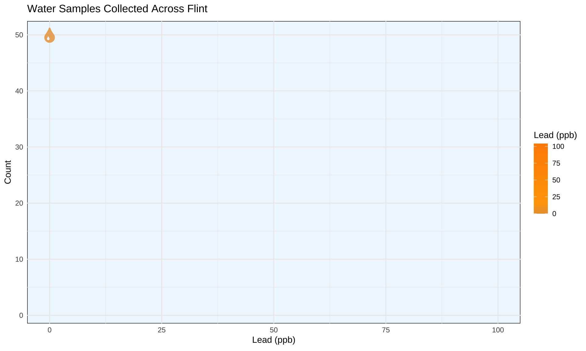
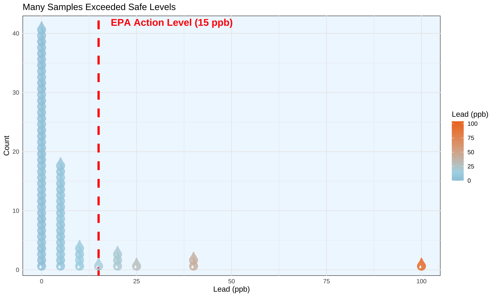
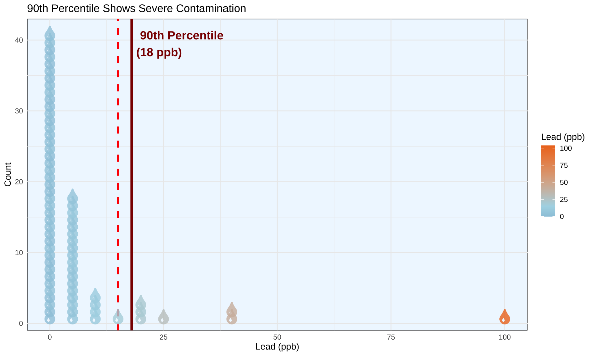
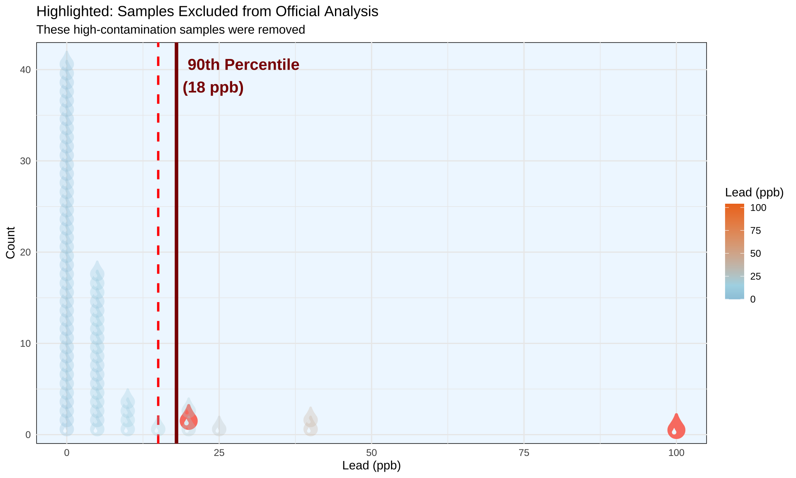
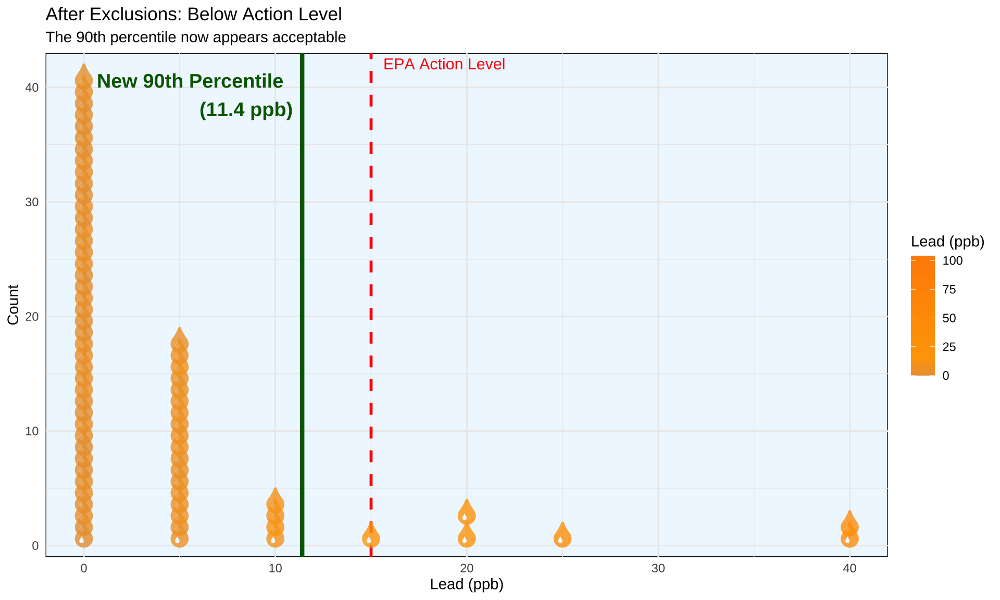

library(tidyverse)
library(gganimate)
library(emojifont)
load.fontawesome()
flint_mdeq <- readr::read_csv('https://raw.githubusercontent.com/rfordatascience/tidytuesday/main/data/2025/2025-11-04/flint_mdeq.csv')Lead concentration in Flint water samples in 2015
In 2015, water samples were collected from homes across Flint, Michigan to test for lead contamination.

The EPA action level for lead in drinking water is 15 parts per billion (ppb). :::{.cr-section}

When more than 10% of samples exceed this level, action is required.
:::
The key metric is the 90th percentile of lead levels. For all samples, this was well above the action level.

But some samples were excluded from the official analysis. These high-lead samples were removed from the dataset.

With those samples removed, the 90th percentile dropped to 11.4 ppb - conveniently just below the EPA action level. ::: {.cr-section}

:::
The data
#|echo: FALSE
flint_mdeq <- readr::read_csv('https://raw.githubusercontent.com/rfordatascience/tidytuesday/main/data/2025/2025-11-04/flint_mdeq.csv')
flint_vt <- readr::read_csv('https://raw.githubusercontent.com/rfordatascience/tidytuesday/main/data/2025/2025-11-04/flint_vt.csv')TidyTuesday Data
This dataset can be found on the tidytuesday repo.
This week we are exploring lead levels in water samples collected in Flint, Michigan in 2015. The data comes from a paper by Loux and Gibson (2018).
The data this week includes samples collected by the Michigan Department of Environment (MDEQ) and data from a citizen science project coordinated by Prof Marc Edwards and colleagues at Virginia Tech. Community-sourced samples were collected after concerns were raised about the MDEQ excluding samples from their data. You can read about the “murky” story behind this data here.
Data Dictionary
flint_mdeq.csv
| variable | class | description |
|---|---|---|
| sample | double | sample number |
| lead | double | lead level in parts per billion (all samples) |
| lead2 | double | lead level in parts per billion (2 samples removed) |
| notes | character | comment about data removal |
flint_vt.csv
| variable | class | description |
|---|---|---|
| sample | integer | sample number |
| lead | double | lead levels in parts per billion (ppb) |
library(tidyverse)
library(r2d3)
d3_data <- flint_mdeq |>
arrange(sample) |>
mutate(lead_bin = floor(lead / 2.5) * 2.5) |>
group_by(lead_bin) |>
mutate(
stack_pos = row_number(), # Y position in the stack
is_removed = is.na(lead2) # Flag for the "Removed" step
) |>
ungroup() |>
select(sample, lead, lead_bin, stack_pos, is_removed)
# Calculate key stats to pass to JS
stats <- list(
q90_orig = unname(quantile(flint_mdeq$lead, 0.9, na.rm = TRUE)),
q90_new = unname(quantile(flint_mdeq$lead2, 0.9, na.rm = TRUE))
)
#| fig-width: 10
#| fig-height: 6
r2d3(
data = d3_data,
script = "FlintWater.js",
options = stats,
d3_version = 4
)